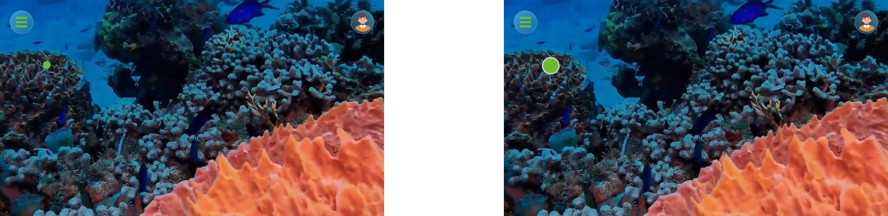
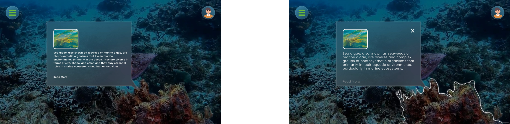
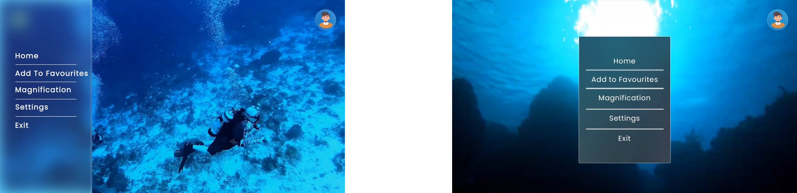
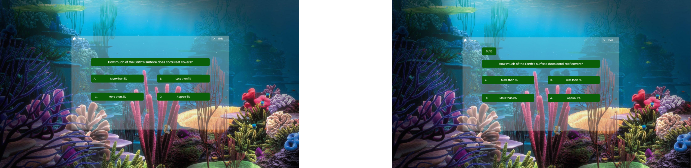

Verdura is an innovative Virtual Reality (VR) learning platform designed to bridge the gap between humans and the plant world. It aims to inspire a deeper connection with plant science through an immersive and engaging user experience.
Verdura leverages VR technology to create an immersive learning environment. It offers a variety of features to allow users to explore the world of plants:
These features, along with a user-friendly interface that includes search, favorites, and progress tracking functionalities, aim to transform plant science education into a captivating adventure. Additionally, Verdura has the potential to be translated into multiple languages, broadening its reach to a global audience.
Traditional educational systems often have a blind spot when it comes to plant sciences. This results in a significant gap in our collective knowledge and appreciation for the plant world. Plants are the silent powerhouses of our planet, playing a critical role in maintaining the delicate balance of Earth's ecosystem. From producing the oxygen we breathe to providing the base of the food chain, plants are the foundation of life on Earth. Their intricate beauty goes beyond aesthetics, with unique adaptations and symbiotic relationships that sustain entire ecosystems. Unfortunately, current educational approaches often fail to capture this wonder. Textbooks and lectures often present a dry and one-dimensional view of plant life, neglecting the fascinating stories behind their growth and survival. This lack of engagement affects people of all ages, from students who might lose interest in pursuing plant-related careers to adults who lack a deeper understanding of the natural world around them. This knowledge gap hinders our ability to appreciate the interconnectedness of life and poses a challenge for future generations who will need to be responsible stewards of the environment.
To understand user needs and preferences, Verdura employed a multi-pronged research approach:
Our initial hypothesis was that university students would be the primary target audience for a botany learning app. Following this assumption, the initial strategy involved:
Based on the research findings, the target audience was broadened beyond university students to a more general audience aged 13-33. The focus shifted from age to user needs and interests:
Considering the VR headset options and the revised target audience, Oculus Quest 2 emerged as the most suitable choice due to its:
Interview Results:
Survey Results: (Participants aged 13-33):
Verdura prioritized selecting a VR headset that could deliver an exceptional user experience while considering factors like accessibility, target audience, and content compatibility. Here's a breakdown of the VR headsets explored during the research phase:
From all thesd considerations Oculus Quest 2 was selcted to be best performing VR tool for Verdura
Personas & Scenarios were developed to understand the diverse needs of potential users. These personas included Julia, a Teacher and Dave, a Botany Student. These personas helped shape the design process by providing specific insights into the challenges faced by users.


To get an engaging VR experience allows you to explore the wonders of the coral reef at your own pace, fostering a deeper understanding and appreciation for this vital ecosystem, the low-fidelity phase involved creating a paper prototype for the application. This prototype outlined the basic structure, user interface, and key features. The initial design focused on touch to learn, zoom in, zoom out and interactive bubbles. This phase allowed for quick iterations and adjustments based on feedback.
The high-fidelity prototype evolved from the low-fidelity version, incorporating detailed design elements, color schemes, and user interface refinements. The design adhered to inclusive principles, ensuring that each feature was carefully implemented to cater to user needs.


A semi-structured interview process with 8 participants (aged 14-45) explored user experience with a VR botany prototype. Participants were a mix of genders (3 male, 5 female) and all had prior VR experience.
Methodology:
Key Findings:
Additional Feedback:
Overall, the user testing yielded valuable insights to refine the VR botany prototype. Addressing visual clarity, information presentation speed, and user interface elements will be crucial in creating a more engaging and effective learning experience.
1. The circles are not visible for the users and they felt hard to point at them and select those circles, which are now made slightly bigger for the convenience of the user.
2. The plant was not emphasized after the selection, the font size for small which affected the readability and the close button was not there which might leave the audience clueless after reading it, whose font size has been increased by 4 points, the plant was emphasized with a glowing effect in the background of it and a closing button has been given at the top to make sure that the users can close them after reading them.
3. The hamburger menu was at the side which felt uncomfortable for the users is now moved to centre as a floating dialog box.
4. After a suggestion form a user after testing Progress Bar was created to identify which questions are they on and how many are left. Also the labelling for options were changed to YXBA from ABCD.
